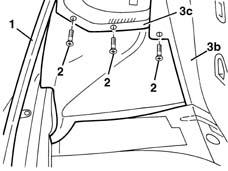

7040B06 side trim (one) lh or rh, load compartment/load platform - r r
- Path
- Procedures > 70 FITTINGS > 7040 BODYSHELL INTERIOR TRIMS AND FITTINGS > 7040B luggage compartment and load platform trims > 7040B06 side trim (one) lh or rh, load compartment/load platform - r r
- Kind
- repair procedure (removal / refitting; the operation number is the code)
- Applies to
- all engines; all production periods
- Interactive page
- https://sloeber94.github.io/elrnDB-lYpsln/en/#/2429583
Applies to: all engines; all production periods
 Removing
Removing
 Refitting
Refitting7040B22 luggage compartment/load platform moulding - r+r
7040B10 load platform (luggage platform) trim - r+r
1. Release the tailgate seal in the rear of the side trim.
2. Undo the bolts.
3. Remove the side trim (3a) releasing the trims (3b) and (3c) from underneath.

Applies to: all engines; all production periods
Refitting
RemovingCheck that the cover is undamaged.
Place the trim in position.
Tighten the bolts.
Repositin the tailgate housing seal.